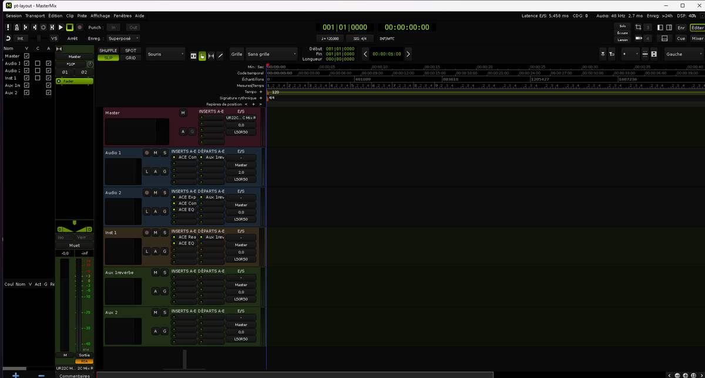

MasterMix
La station de travail audio professionnelle, facile, pour mixer et masteriser.

Fenêtre d'édition : chaque piste affiche ses inserts, ses départs et ses entrées-sorties.
Facile à prendre en main, sérieuse jusqu'au master.
Tout ce qu'il faut pour enregistrer, mixer et masteriser, dans une seule fenêtre lisible, en français.
Facile
Une disposition inspirée des grandes consoles : inserts, départs et entrées-sorties directement dans l'en-tête de chaque piste. Modes SHUFFLE, SPOT, SLIP et GRID, horloges Début / Fin / Longueur. Interface entièrement en français.
Mixer
Une tranche par piste, bus et retours, gel des pistes en un raccourci. Vos instruments et effets VST3, VST2 et CLAP, repérés automatiquement et hébergés dans un processus séparé. Pilotes ASIO pour une latence minimale.
Masteriser
Les huit plugins Mastersuite sont inclus : égaliseur MasterQ, compresseur MasterComp 76, limiteur true-peak MasterL, restauration MasterClean, assistant de mastering MasterFlem, réverbe MasteRev, délai MasterDelay et accordeur MasterTune.

Une tranche par piste, tout sous les yeux.
Inserts, départs, panoramique, fader et vumètre alignés sur chaque tranche. Les instruments multi-sorties tiennent sur une seule tranche, ou une par sortie si vous le demandez. Le master reste à droite, toujours visible.
Télécharger MasterMix 2.17
Installeur pour Windows 10 et 11, 64 bits, avec les sept plugins VST3 Mastersuite. Licence à vie offerte aux 100 premiers utilisateurs, 10 € ensuite. Sans compte ni abonnement ; MasterMix vous propose lui-même les mises à jour suivantes.
MasterMix-2.17-Setup-x64.exe · 13 MoConfiguration requise
Un PC récent suffit. Une interface audio avec pilote ASIO donne le meilleur résultat.